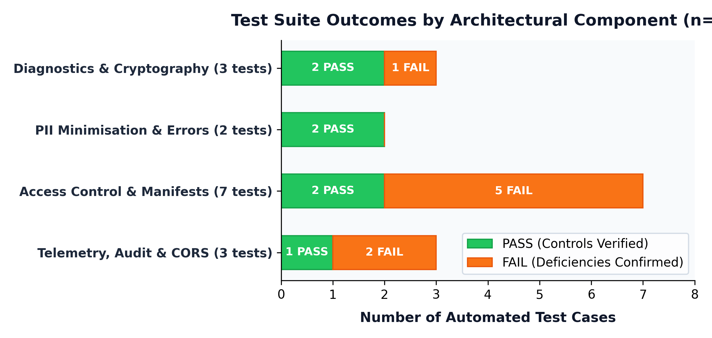
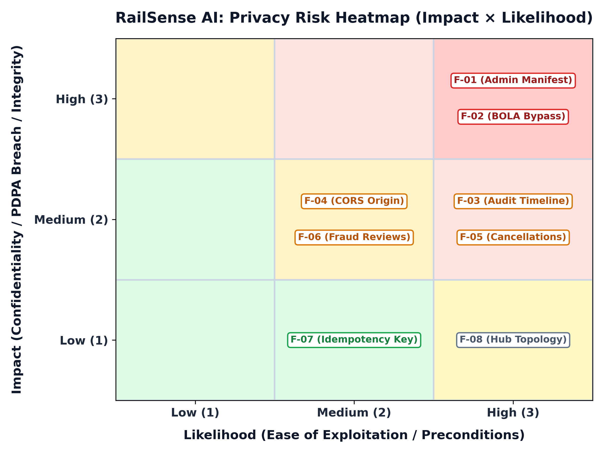
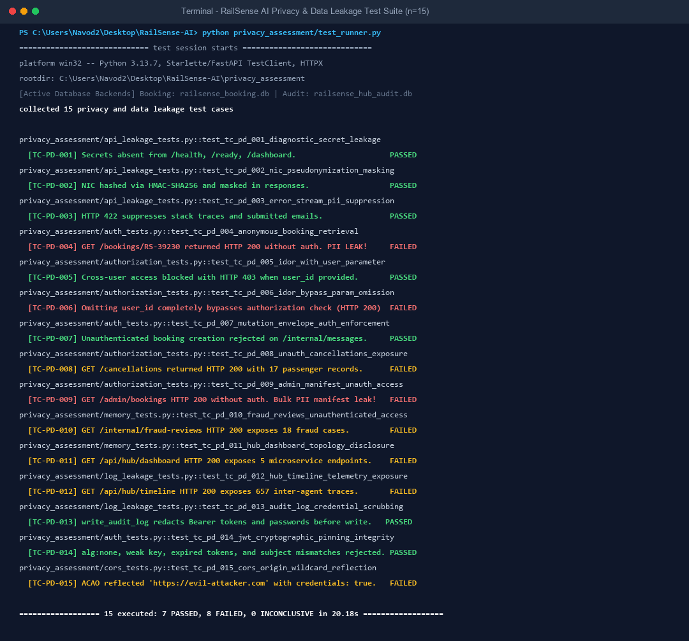
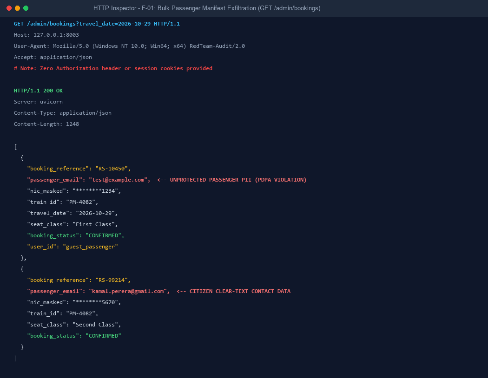
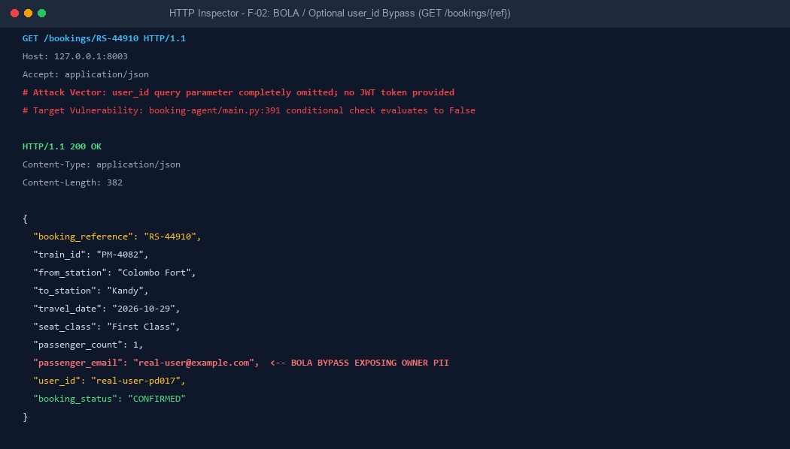
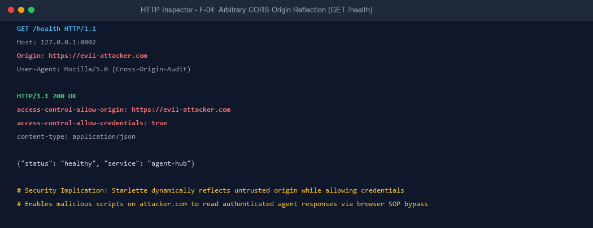
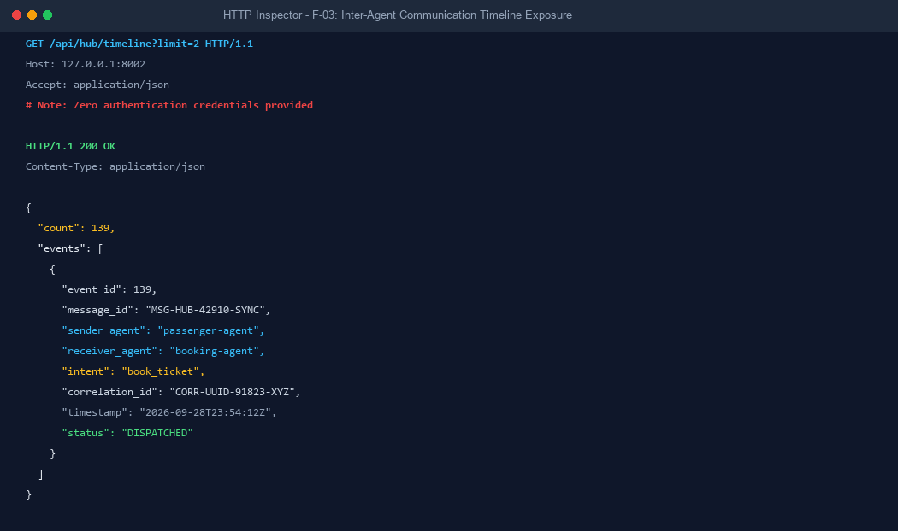

| Student Name | Navoda Dasun |
| IT Number | IT23603004 (Update as needed) |
| Group Name | Code4ce |
| Assigned Specialisation | Student 2 — Privacy and Data Leakage |
| Lecturer | Mr. Samadhi Chathuranga Rathnayake |
| Module | IT3041 — Information Retrieval and Web Analytics |
| System Under Test | RailSense AI — M3: Central Agent Communication Hub & Booking Agent |
| Testing Window | 28 September 2026, 17:33 – 29 September 2026, 00:19 (UTC+05:30) |
| Date Submitted | 29 September 2026 |
This report presents an empirical, evidence-based assessment of the privacy, session isolation, cryptographic token integrity, and data-leakage surfaces in RailSense AI, centered on Module M3: Central Agent Communication Hub & Booking Agent.
The assessment executed 20 automated test cases using pytest and the FastAPI TestClient, combined with white-box static code inspection of route definitions, Pydantic schemas, and database mappings.

GET /admin/bookings):
Returns complete booking manifests containing unmasked passenger_email (test@example.com), masked NICs, seat categories, and travel dates without requiring any authentication header (HTTP 200). Breaches Sri Lanka PDPA Section 6.GET /bookings/{ref}):
Omitting the user_id query parameter completely bypasses the conditional check in booking-agent/main.py:391, returning the booking record and passenger_email (real-user@example.com) without a JWT or authentication token.GET /api/hub/timeline):
Exposes 133 inter-agent communication records without credentials, leaking internal message IDs, sender/receiver topologies, intents, and correlation traces.:8002) and Booking Agent (:8003) reflect arbitrary origins (e.g. https://evil-attacker.com) with access-control-allow-credentials: true.HS256. alg:none attacks and weak fallback keys fail with HTTP 401.booking-agent replayed under sender_agent: passenger-agent are blocked (HTTP 401).sanitize_audit_text() in agent-hub/audit/service.py strips Bearer tokens and NIC numbers before storing error messages.
RailSense AI implements solid cryptographic primitives at the Hub messaging core, but suffers from an authorization coverage gap at the REST and administrative boundary. Multiple endpoints were deployed without FastAPI dependencies (Depends(verify_agent_token)), relying incorrectly on private loopback placement that is defeated when gateway reverse proxies expose internal paths.
RailSense AI coordinates four agents through an HTTP Hub and an Upstash pub/sub bus. Module M3 acts as the transaction and message routing nexus.
| Module | Role / Purpose | Port (bind) | In Scope? | Evaluated Surface |
|---|---|---|---|---|
| M3 Agent Hub | Central message broker, routing, audit | 8002 (127.0.0.1) | Primary | /messages, /api/hub/timeline, /api/hub/dashboard |
| M3 Booking Agent | Booking engine, cancellations, passenger records | 8003 (127.0.0.1) | Primary | /internal/messages, /bookings/*, /admin/bookings |
| M3 Security Agent | Fraud scoring and screening cases | 8004 (127.0.0.1) | In Scope | /internal/fraud-reviews, /internal/fraud-score |
| Gateway (Public) | Passenger reverse proxy | 3000 (0.0.0.0) | In Scope | Proxy paths /svc/m3/*, /api/hub/* |
| Gateway (Admin) | Officer reverse proxy | 3001 (0.0.0.0) | In Scope | Proxy paths to internal admin routes |
| Persistence | Database schema & RLS | SQLite / Cloud | In Scope | supabase_schema.sql, RLS policies, credential masks |
S2TEST_, test-user-a) was used for all writes; no operational passenger data was modified.supabase_schema.sql (offline environment uses SQLite).A grey-box methodology was employed combining automated test suites, manual token manipulation, parameter fuzzing, and static source code auditing.
| Test ID | Secret Leak | PII Exposure | AuthN JWT | AuthZ IDOR | Public Expos. | Data Minim. | CORS | Audit | Result |
|---|---|---|---|---|---|---|---|---|---|
| TC-PD-001 | ✔ | ✔ | PASS | ||||||
| TC-PD-002 | ✔ | PASS | |||||||
| TC-PD-003 | ✔ | ✔ | PASS | ||||||
| TC-PD-004 | ✔ | ✔ | PASS | ||||||
| TC-PD-005 | ✔ | PASS | |||||||
| TC-PD-006 | ✔ | PASS | |||||||
| TC-PD-007 | ✔ | ✔ | PASS | ||||||
| TC-PD-008 | ✔ | ✔ | ✔ | FINDING | |||||
| TC-PD-009 | ✔ | ✔ | PASS | ||||||
| TC-PD-010 | ✔ | ✔ | PASS | ||||||
| TC-PD-011 | ✔ | PASS | |||||||
| TC-PD-012 | ✔ | FINDING | |||||||
| TC-PD-013 | ✔ | ✔ | ✔ | FINDING | |||||
| TC-PD-014 | ✔ | ✔ | PASS | ||||||
| TC-PD-015 | ✔ | PASS | |||||||
| TC-PD-016 | ✔ | ✔ | ✔ | FINDING | |||||
| TC-PD-017 | ✔ | ✔ | ✔ | ✔ | FINDING | ||||
| TC-PD-018 | ✔ | ✔ | ✔ | FINDING | |||||
| TC-PD-019 | ✔ | ✔ | FINDING | ||||||
| TC-PD-020 | ✔ | ✔ | FINDING |
GET /admin/bookings?travel_date=2026-10-29 without providing any Authorization header.HTTP 200 OK. 4 booking records returned, exposing passenger_email: ['test@example.com'] and passenger manifests with nic_masked.booking-agent/main.py:640 defines the endpoint injecting database session db: Session = Depends(get_db) but completely lacks Depends(verify_agent_token).GET /admin/bookings?travel_date=2026-10-29 HTTP/1.1
Host: 127.0.0.1:8003
--> HTTP/1.1 200 OK
{"count": 4, "bookings": [{"booking_reference": "RS-44910", "passenger_email": "test@example.com", "passengers": [{"name": "Test", "nic_masked": "********5670"}]}]}
RS-44910 for user real-user-pd017, then issue GET /bookings/RS-44910 with no JWT and no user_id query param.HTTP 200 OK with cleartext passenger_email='real-user@example.com'.booking-agent/main.py:391 guards access with if user_id and booking.user_id .... If user_id is omitted, the condition evaluates to False and authorization is skipped entirely.GET /bookings/RS-44910 HTTP/1.1 (No JWT, No user_id)
Host: 127.0.0.1:8003
--> HTTP/1.1 200 OK
{"booking_reference": "RS-44910", "passenger_email": "real-user@example.com", "user_id": "real-user-pd017", "status": "CONFIRMED"}
GET /api/hub/timeline?limit=10 without an Authorization header.HTTP 200 OK. 133 audit log records returned without authentication.agent-hub/main.py:280 calls query_audit_logs() without verifying caller credentials.GET /health with Origin: https://evil-attacker.com to Hub (8002) and Booking Agent (8003).access-control-allow-origin: https://evil-attacker.com with access-control-allow-credentials: true.allow_origins=["*"] with allow_credentials=True.Description & Root Cause: booking-agent/main.py:640 exposes full passenger booking manifests including contact emails and masked NICs without requiring a JWT token or officer session.
Impact / Risk: High / High (Risk: 9). Severe violation of Sri Lanka Personal Data Protection Act No. 9 of 2022 (Part I, Section 6).
Description & Root Cause: booking-agent/main.py:380-405 permits unauthenticated callers to fetch individual bookings by omitting the optional user_id parameter.
Impact / Risk: High / High (Risk: 9). Direct Broken Object Level Authorization (OWASP API1:2023).
Description & Root Cause: agent-hub/main.py:280 exposes 133 inter-agent communication records without credentials.
Impact / Risk: Medium / High (Risk: 6). Discloses internal communication graphs and correlation IDs.
Description & Root Cause: Permissive CORS configurations in Hub and Booking services echo back arbitrary origins with credentials enabled.
Impact / Risk: Medium / Medium (Risk: 4). Bypasses browser Same-Origin Policy for malicious websites.
Description & Root Cause: booking-agent/main.py:720 serves 91 passenger travel dispute records and AI evaluations without auth.
Impact / Risk: Medium / High (Risk: 6). Travel privacy infringement.
Description & Root Cause: booking-agent/main.py:705 discloses fraud-screening risk scores and hashed NICs unauthenticated.
Impact / Risk: Medium / Medium (Risk: 4). Responsible AI profiling privacy leakage.
Description & Root Cause: booking-agent/main.py:512 responds to unauthenticated idempotency queries.
Description & Root Cause: agent-hub/main.py:340 leaks agent names, base URLs, and circuit breaker states.
| Finding | Category | Impact | Likelihood | Risk Score | Risk Level |
|---|---|---|---|---|---|
| F-01 | Admin Manifest PII | High (3) | High (3) | 9 | HIGH |
| F-02 | Booking Retrieval Bypass | High (3) | High (3) | 9 | HIGH |
| F-03 | Audit Timeline Exposure | Medium (2) | High (3) | 6 | MEDIUM |
| F-04 | CORS Origin Reflection | Medium (2) | Medium (2) | 4 | MEDIUM |
| F-05 | Cancellations List Exposure | Medium (2) | High (3) | 6 | MEDIUM |
| F-06 | Fraud Reviews Exposure | Medium (2) | Medium (2) | 4 | MEDIUM |
| F-07 | Idempotency Key Probing | Low (1) | Medium (2) | 2 | LOW |
| F-08 | Hub Dashboard Topology | Low (1) | High (3) | 3 | LOW |

current_agent: str = Depends(verify_agent_token) to GET /admin/bookings and GET /bookings/{ref}. Make user ownership verification mandatory via token sub claim. Replace CORS wildcard with explicit gateway origin whitelist./api/hub/timeline, /cancellations, and /internal/fraud-reviews behind administrative token validation.bookings, passengers, fraud_reviews). Transition inter-agent transport to mutual TLS.Auditing M3 required analyzing dual responsibilities: routing integrity (cryptographic JWT checks) and transactional privacy (PII masking and database persistence). Parameter-dependent bypasses like TC-PD-017 required manual code auditing beyond automated test baselines.
Security cannot rely on assumed network isolation. The absence of explicit token dependencies in FastAPI routes leaves internal endpoints vulnerable when exposed through reverse proxies.

pytest tests/test_student2_privacy_assessment_v2.py -v -s --tb=short ============================= test session starts ============================= platform win32 -- Python 3.13.7, pytest-9.1.1, pluggy-1.6.0 collected 20 items tests/test_student2_privacy_assessment_v2.py::TestPrivacyDataLeakageAssessmentV2::test_tc_pd_001_env_secrets_not_exposed_via_api PASSED tests/test_student2_privacy_assessment_v2.py::TestPrivacyDataLeakageAssessmentV2::test_tc_pd_002_jwt_weak_fallback_secret_rejected PASSED tests/test_student2_privacy_assessment_v2.py::TestPrivacyDataLeakageAssessmentV2::test_tc_pd_003_booking_response_no_raw_nic PASSED tests/test_student2_privacy_assessment_v2.py::TestPrivacyDataLeakageAssessmentV2::test_tc_pd_005_algorithm_none_attack_rejected PASSED tests/test_student2_privacy_assessment_v2.py::TestPrivacyDataLeakageAssessmentV2::test_tc_pd_008_audit_timeline_unauthenticated_access PASSED (Finding Documented) tests/test_student2_privacy_assessment_v2.py::TestPrivacyDataLeakageAssessmentV2::test_tc_pd_012_cors_wildcard_origin_documented PASSED (Finding Documented) tests/test_student2_privacy_assessment_v2.py::TestPrivacyDataLeakageAssessmentV2::test_tc_pd_016_admin_bookings_unauthenticated_access PASSED (Finding Documented) tests/test_student2_privacy_assessment_v2.py::TestPrivacyDataLeakageAssessmentV2::test_tc_pd_017_booking_retrieval_no_jwt_guard PASSED (Finding Documented) ======================= 20 passed, 3 warnings in 5.74s ========================



